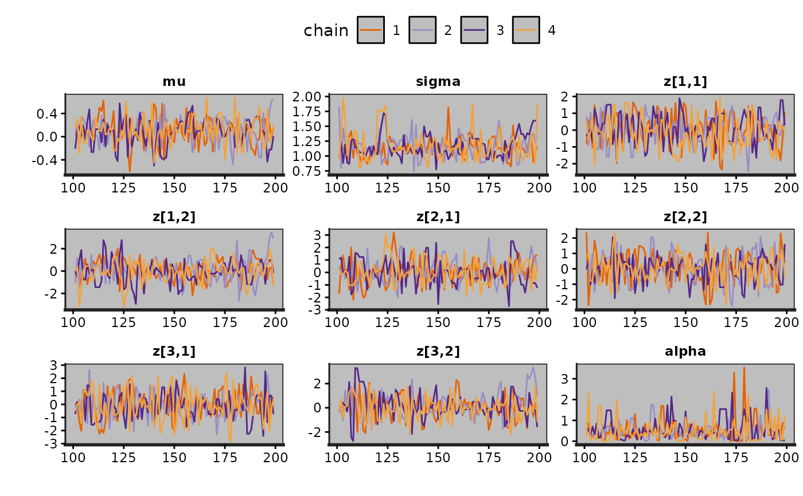
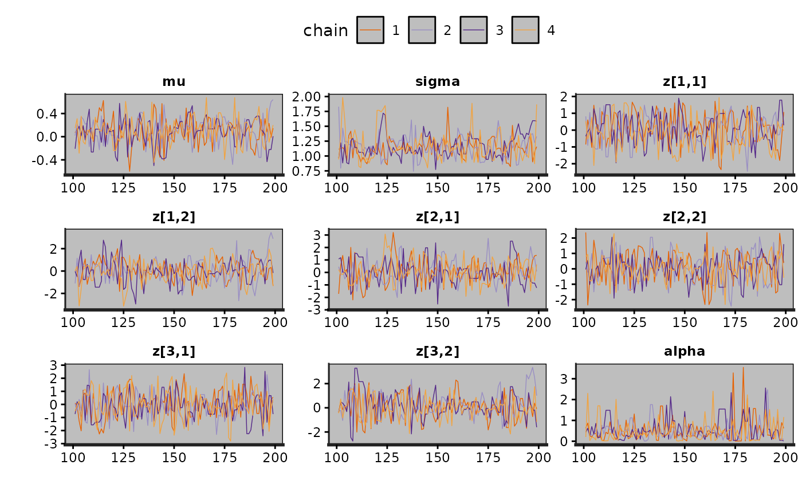
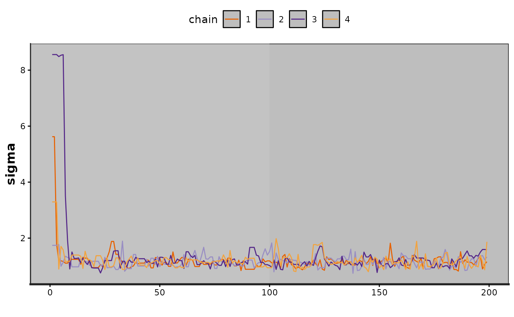

Markov chain traceplots
stanfit-method-traceplot.RdDraw the traceplot corresponding to one or more Markov chains, providing a visual way to inspect sampling behavior and assess mixing across chains and convergence.
Usage
<!-- %% traceplot(object, \dots) -->
# S4 method for class 'stanfit'
traceplot(object, pars, include = TRUE, unconstrain = FALSE,
inc_warmup = FALSE, window = NULL, nrow = NULL, ncol = NULL, ...)Arguments
- object
An instance of class
stanfit.- pars
A character vector of parameter names. Defaults to all parameters or the first 10 parameters (if there are more than 10).
- include
Should the parameters given by the
parsargument be included (the default) or excluded from the plot? Only relevant ifparsis not missing.- inc_warmup
TRUEorFALSE, indicating whether the warmup sample are included in the trace plot; defaults toFALSE.- window
A vector of length 2. Iterations between
window[1]andwindow[2]will be shown in the plot. The default is to show all iterations ifinc_warmupisTRUEand all iterations from the sampling period only ifinc_warmupisFALSE. Ifinc_warmupisFALSEthe iterations specified inwindowshould not include iterations from the warmup period.- unconstrain
Should parameters be plotted on the unconstrained space? Defaults to
FALSE.- nrow,ncol
Passed to
facet_wrap.- ...
Optional arguments to pass to
geom_path(e.g.size,linetype,alpha, etc.).
Value
A ggplot object that can be further customized
using the ggplot2 package.
Examples
# \dontrun{
# Create a stanfit object from reading CSV files of samples (saved in rstan
# package) generated by funtion stan for demonstration purpose from model as follows.
#
excode <- '
transformed data {
array[20] real y;
y[1] <- 0.5796; y[2] <- 0.2276; y[3] <- -0.2959;
y[4] <- -0.3742; y[5] <- 0.3885; y[6] <- -2.1585;
y[7] <- 0.7111; y[8] <- 1.4424; y[9] <- 2.5430;
y[10] <- 0.3746; y[11] <- 0.4773; y[12] <- 0.1803;
y[13] <- 0.5215; y[14] <- -1.6044; y[15] <- -0.6703;
y[16] <- 0.9459; y[17] <- -0.382; y[18] <- 0.7619;
y[19] <- 0.1006; y[20] <- -1.7461;
}
parameters {
real mu;
real<lower=0, upper=10> sigma;
vector[2] z[3];
real<lower=0> alpha;
}
model {
y ~ normal(mu, sigma);
for (i in 1:3)
z[i] ~ normal(0, 1);
alpha ~ exponential(2);
}
'
# exfit <- stan(model_code = excode, save_dso = FALSE, iter = 200,
# sample_file = "rstan_doc_ex.csv")
#
exfit <- read_stan_csv(dir(system.file('misc', package = 'rstan'),
pattern='rstan_doc_ex_[[:digit:]].csv',
full.names = TRUE))
print(exfit)
#> Inference for Stan model: rstan_doc_ex.
#> 4 chains, each with iter=200; warmup=100; thin=1;
#> post-warmup draws per chain=100, total post-warmup draws=400.
#>
#> mean se_mean sd 2.5% 25% 50% 75% 97.5% n_eff Rhat
#> mu 0.09 0.01 0.23 -0.38 -0.05 0.11 0.25 0.56 338 1.00
#> sigma 1.16 0.02 0.21 0.86 1.02 1.14 1.28 1.74 186 1.00
#> z[1,1] 0.00 0.05 0.92 -1.81 -0.65 -0.01 0.71 1.59 285 1.01
#> z[1,2] 0.01 0.06 1.03 -2.04 -0.66 0.05 0.67 1.99 270 1.00
#> z[2,1] 0.10 0.05 0.98 -1.71 -0.55 0.08 0.76 1.98 342 1.00
#> z[2,2] 0.04 0.05 0.95 -1.85 -0.68 0.07 0.72 1.73 394 1.00
#> z[3,1] -0.06 0.05 1.07 -2.08 -0.81 -0.11 0.68 1.93 453 1.00
#> z[3,2] 0.12 0.06 1.04 -1.74 -0.51 0.08 0.77 2.16 310 1.00
#> alpha 0.53 0.03 0.53 0.01 0.18 0.39 0.69 2.07 426 0.99
#> lp__ -17.47 0.20 2.26 -23.33 -18.68 -17.21 -15.76 -14.29 124 1.02
#>
#> Samples were drawn using NUTS(diag_e) at Fri Aug 21 16:12:58 2026.
#> For each parameter, n_eff is a crude measure of effective sample size,
#> and Rhat is the potential scale reduction factor on split chains (at
#> convergence, Rhat=1).
traceplot(exfit)

traceplot(exfit, size = 0.25)
#> Warning: Using `size` aesthetic for lines was deprecated in ggplot2 3.4.0.
#> ℹ Please use `linewidth` instead.
#> ℹ The deprecated feature was likely used in the rstan package.
#> Please report the issue at <https://github.com/stan-dev/rstan/issues/>.

traceplot(exfit, pars = "sigma", inc_warmup = TRUE)

trace <- traceplot(exfit, pars = c("z[1,1]", "z[3,1]"))
trace + scale_color_discrete() + theme(legend.position = "top")
#> Error in scale_color_discrete(): could not find function "scale_color_discrete"
# }